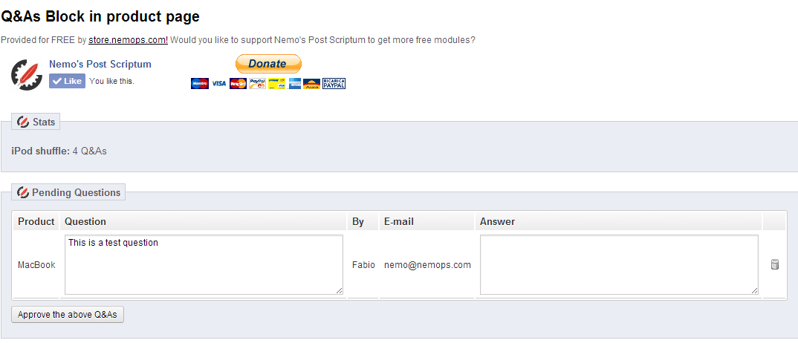

Ask a Question Module for Prestashop
By Nemo
http://nemops.com
http://store.nemops.com
Installation
- Copy the prestaqna folder into the modules folder of your website, or upload it from the modules page.
- Go ahead and install the module from the Front Office Features Tab in back office’s modules section
Configuration

You will only need to configure the module once you get a question from your store. When you do, you can answer each question using the form.
If you think one of them is not worth being published, simply erase it using the appropriate icon.
When you are satisfied, hit he "Approve the avoce Q&As" button. Soon after this, the user who asked the question will be informed about your answer, which will be also published in the product page.